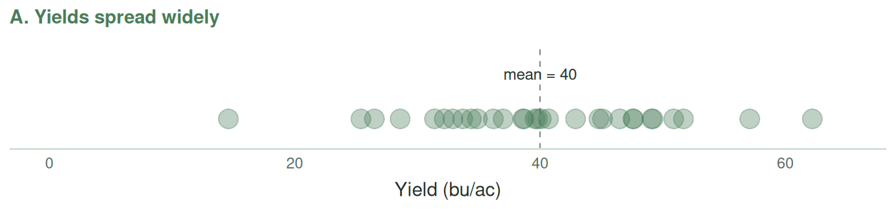
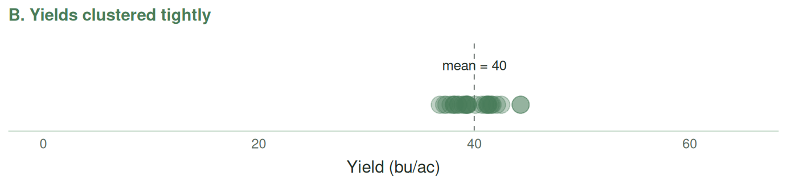

3 Describing Data
This chapter is about the statistics. Now that you can get numbers into Excel and compute with them, we turn to what those numbers mean: how to summarize a column of yields so a human can grasp it, and how to read what the summary is telling you. Everything here uses the Excel skills from the previous two chapters.
Most datasets are so large that we can’t quickly look at all the numbers in them. However, we typically want to get a sense of what the data looks like at a glance. We do that through summary statistics and clever charts. These statistics and charts describe the data. We can think about four characteristics of data:
- Centre. Where is the middle or average of the data?
- Position. Where does a particular observation sit relative to the rest — near the middle, or out toward one end?
- Spread. How spread out are the values — are they tightly clustered or all over the map?
- Shape. What does the distribution of the data look like — is it roughly symmetric, with values balanced on either side of the centre, or is it lopsided, with most observations bunched at one end and a few trailing off toward the other?
In this chapter we will learn a) the statistics and charts that summarize the centre, position, spread, and shape of the data; b) how to interpret them; and c) how to calculate them in Excel, using the tools from Chapter 1 and Chapter 2.
Learning Objectives
By the end of this chapter, you will be able to:
Statistical concepts
- Describe the centre of data.
- Calculate and interpret the mean, median, and mode — and choose the right one
- Read the mean–median gap as a clue to outliers and the shape of a distribution
- Compute a weighted average, and see why it can differ from a simple one
- Describe the position of observations within the data.
- Compute percentiles and quartiles
- Describe the spread of the data.
- Compute range, variance, standard deviation, and coefficient of variation
- Describe the shape of the data.
- Construct and interpret histograms and box plots
3.1 Measures of Central Tendency
Now let’s actually do some data analysis. The most basic question you can ask about a set of numbers is: “what is a typical value?” There are three common answers to that question, and which one is “right” depends on what you mean by “typical.”
Mean
The mean (often called the “average”) is the sum of the values divided by the number of values. If your yields over five years are 48, 52, 47, 55, and 50 bushels per acre, the mean is:
\[ \bar{x} = \frac{48 + 52 + 47 + 55 + 50}{5} = \frac{252}{5} = 50.4 \text{ bu/acre} \]
In Excel: =AVERAGE(A1:A5).
Notation: we write \(\bar{x}\) (pronounced “x-bar”) for the sample mean. The general formula is:
\[ \bar{x} = \frac{1}{n} \sum_{i=1}^{n} x_i \]
where \(n\) is the number of observations and \(x_i\) is the \(i\)-th observation.
The mean is the right measure of centre when your data is roughly symmetric and has no extreme outliers. It has the nice property that the total of all values equals \(n \bar{x}\), which matters in many practical contexts (total revenue = average price × quantity, etc.). However, the mean can be very misleading if your data is skewed or has extreme values. For example, if you are looking at farm incomes in a region, a few very large operations can pull the mean way up, so the “average farm income” sounds high, but the typical farm earns much less. You often encounter this issue in the media and political debates about economic growth and the direction of the agricultural sector.
Use the mean to describe the centre of reasonably symmetric data; be cautious when the data are skewed or contain extreme values.
Weighted Average
The ordinary mean treats every value as equally important. But often the values represent things of very different size, and treating them equally gives a misleading answer. When that happens you want a weighted average: each value is counted in proportion to how much it should “count.”
Return to the nine barley varieties from the SUM example, with acres in B2:B10 and yields in C2:C10. Suppose you want to answer: what was the average barley yield in this zone?
The tempting move is a plain =AVERAGE(C2:C10), which gives about 48.1 bu/ac. But that treats a variety grown on 406 acres exactly the same as one grown on 18,677 acres — as if each variety were one “vote.” That is not what “the average yield of barley in the zone” means. A variety planted on tens of thousands of acres should count far more toward the zone’s average than a niche variety on a few hundred acres.
The right calculation weights each yield by its acres: multiply each variety’s yield by its acres, add those up (that is total production, in bushels), and divide by the total acres:
\[ \bar{x}_w = \frac{\sum w_i\, x_i}{\sum w_i} = \frac{\text{total bushels}}{\text{total acres}} \]
where \(x_i\) is each variety’s yield and \(w_i\) is its acres (the weight). You already know both pieces from the SUM section — it is SUMPRODUCT over SUM:
=SUMPRODUCT(C2:C10, B2:B10) / SUM(B2:B10)This comes out to roughly 46.6 bu/ac — noticeably below the simple 48.1. The gap is telling you that the biggest-acreage varieties yielded a bit below the small-acreage ones, so counting every variety equally overstated the zone’s real average. Same data, two different “averages,” and the weighted one is the honest answer to the question actually asked.
This is not just an agriculture trick. Any time you average numbers that stand for different-sized quantities, you weight. A classic example is a course grade: if the midterm is worth 30% and the final 70%, and you score 80 and 90, your grade is not the plain average 85. It is the weighted average \(0.30 \times 80 + 0.70 \times 90 = 87\) — the final counts more because it carries more weight. Grade-point averages (weighting each course’s grade by its credit hours), price indexes, and portfolio returns all work the same way.
When your values represent different-sized things, average them by weighting — multiply each value by its weight, sum, and divide by the total weight (=SUMPRODUCT(values, weights)/SUM(weights)) — rather than counting every row equally.
Median
The median is the middle value when the data is sorted. If you have an odd number of observations, it is literally the middle one. If you have an even number, it is the average of the two middle ones.
For our yields (sorted: 47, 48, 50, 52, 55), the median is 50. In Excel: =MEDIAN(A1:A5).
The median is generally the right measure of centre when your data is skewed or has extreme outliers. To return to our previous example of farm incomes, if there are a handful of very large operations, then the median income is a more honest answer to “what does a typical farm earn?”
A classic example: in a hypothetical bar, the average wealth of the customers is $100,000. Elon Musk walks in. The average wealth is now hundreds of millions of dollars. The median barely budges.
Comparing the Mean and Median
You now have two answers to “what is a typical value?” — and comparing them is more useful than either one alone. The reason goes back to outliers: a few extreme values pull the mean toward them but barely move the median. So the gap between the mean and the median tells you whether extreme values are at work, and in which direction.
- Mean ≈ median. No side is dominated by extremes; the two measures agree, and the mean is a safe summary.
- Mean noticeably above median. A few unusually high values are pulling the mean up. Think of farm incomes with a handful of very large operations, or field sizes with one enormous field — the “average” sounds high, but a typical unit is closer to the median.
- Mean noticeably below median. A few unusually low values are dragging the mean down. Think of crop yields in a year where a few drought-hit fields failed badly — most fields did fine, but those few pull the average below what a typical field actually produced.
So a handy rule of thumb: compute both, and look at the gap. A big gap is a flag that outliers are present and that you should report the median (and go look at what those extreme values are). A small gap means the two agree and the mean is fine. This is a fast first read you can do before drawing any chart.
(When the extremes cluster on one side like this, statisticians say the data is skewed — mean-above-median is called right-skewed, mean-below-median left-skewed. Don’t worry about the vocabulary yet; you will see this directly, and meet the terms properly, when you build a histogram later in this module.)
Mode
The mode is the most frequently occurring value. In Excel: =MODE.SNGL(A1:A5) for a single mode, or =MODE.MULT(A1:A5) if you want all of them (for data with multiple modes).
The mode is most useful for categorical data (“what is the most common crop in this region?”) or for discrete numeric data with repeated values. For continuous measurements like yields, the mode is usually not interesting because no two measurements will be exactly equal, or if they are it is often just random chance.
TipOther resources — measures of central tendency
- OpenStax, Introductory Statistics 2e — §2.5 “Measures of the Center of the Data”. Free, thorough treatment of mean, median, and mode with worked examples.
- Excel for Dummies — Microsoft 365 Excel for Dummies, the chapter on statistical functions (
AVERAGE,MEDIAN,MODE). Also see Microsoft Excel Data Analysis for Dummies (3rd ed.) for descriptive statistics. - Microsoft Support — the official function references: AVERAGE, MEDIAN, MODE.SNGL.
- Video (concept) — Khan Academy, Statistics intro: mean, median, & mode. Clear and beginner-friendly, no Excel required.
- Video (Excel) — Average, Median and Mode functions in Excel. A hands-on walkthrough of the three functions on a dataset.
3.2 Measures of Location: Percentiles and Quartiles
The mean and median tell you about the centre. Sometimes you want to describe other parts of the distribution. That is what percentiles are for.
The \(p\)-th percentile is the value at or below which about \(p\%\) of the observations fall. The 50th percentile is the median. The 25th percentile is the value below which a quarter of the observations lie; the 75th percentile is the value below which three-quarters lie. These three values — the 25th, 50th, and 75th percentiles — are called the first, second, and third quartiles (\(Q_1\), \(Q_2\), \(Q_3\)).
Note that when we have a small amount of data, the percentile does not always land exactly on one of our data points, and different software uses slightly different rules to fill the gap. Excel’s .INC method (the one we use in this course) places the percentile at position \(1 + (n-1)p\) in the sorted data. For example, with ten values the 25th percentile lands at position \(1 + 9 \times 0.25 = 3.25\) — one-quarter of the way from the 3rd-smallest value to the 4th, so Excel interpolates between them. With larger datasets these interpolation details rarely matter.
In Excel:
=PERCENTILE.INC(A1:A100, 0.9)— the 90th percentile.=QUARTILE.INC(A1:A100, 1)— the first quartile (\(Q_1\)).=QUARTILE.INC(A1:A100, 3)— the third quartile (\(Q_3\)).
(Excel has both .INC and .EXC variants — inclusive and exclusive. For this course use .INC.)
Percentiles are how crop insurance programs define “bad years” (e.g., “a yield in the lowest 10th percentile”), how government agencies define poverty thresholds, and how agronomists describe the performance of a variety (“top-quartile yield”). Get comfortable with them.
The range from \(Q_1\) to \(Q_3\) contains the middle 50% of the data and is called the interquartile range (IQR):
\[ \text{IQR} = Q_3 - Q_1 \]
The IQR is a useful measure of spread that is not affected by a few extreme outliers (unlike the range, which is extremely sensitive to them).
TipOther resources — percentiles and quartiles
- OpenStax, Introductory Statistics 2e — §2.3 “Measures of the Location of the Data” (percentiles, quartiles, and the IQR).
- Excel for Dummies — Microsoft Excel Data Analysis for Dummies (3rd ed.), the descriptive-statistics chapter covering percentiles and quartiles.
- Microsoft Support — PERCENTILE.INC and QUARTILE.INC.
- Video (concept + Excel) — Percentiles and quartiles explained and demonstrated with Excel.
- Video (Excel how-to) — How to calculate quartiles, deciles, and percentiles in Excel.
3.3 Measures of Spread: Variance and Standard Deviation
Two datasets can have the same mean but look very different. Consider the two sets of 30 hypothetical farm yields in Figure 3.1. Both have a mean of exactly 40 bushels per acre, but in panel A the yields are very spread out, while in panel B they are clustered tightly together.


For a data analyst, the spread is very informative. If the values are spread out then we should be curious about what causes this spread. If these fields are far away from each other then maybe the spread is due to weather. But if they are in the same Township, with reasonably similar weather, then it may be due to management practices such as varietal choice, nitrogen application rates, or seeding dates. When we are dealing with large datasets it can be difficult to just look at how spread out points are on a one-dimensional graph. It is therefore handy to be able to distill the spread of data into a single number. In this section we will examine several different measures of spread, each of which has there strengths and weaknesses.
Range
The simplest measure of the spread of the data is the range, which is just the maximum value minus the minimum value. In Excel: =MAX(A1:A100) - MIN(A1:A100). The range is easy to understand but it is very sensitive to outliers — a single bad measurement can blow up the range dramatically. Suppose, for example, that one of the tightly-clustered fields in Figure 3.2 experiences a hail storm that wipes out its crop. That single field stretches the range from 8.9 to 40.6 bu/ac — more than four times larger — even though it is only one field in 30. The IQR, by contrast, barely moves (3.4 to 3.6), because it ignores the extremes entirely.
This problem is even greater if we have a data of hundreds or thousands.
A potentially more useful measure is the interquartile range or IRQ, which measures the difference between the first and third quartile. In other words, half the data lie within the interquartile range. In Excel: =QUARTILE.INC(A1:A100, 3)-QUARTILE.INC(A1:A100, 1). However, whereas the range was too sensitive to outliers, the IQR might not tell us enough about data in the tail of the distribution.
Mean absolute deviation
A better way to measure the spread of the data is to examine how far each observation is from the mean. That is to say for each observation we could calculate \(x_i-\bar{x}\), add them all up and divide by \(n\). However, if we did this we would find that some of the deviations are negative and others are positive. By the definition of a mean, they would all cancel out, giving us zero.
A more useful approach is to calculate the absolute value of these differences – this is called the mean absolute deviation (MAD):
\[ MAD = \frac{\sum_{i=1}^{n} |x_i - \bar{x}|}{n}. \]
Note that the straight lines in the equation above denote absolute value – that is to say if a negative number is between these lines, we treat it as a positive number. If our data is very spread out (panel A of Figure 3.1) we would get a large MAD; if it is tightly clustered (panel B) we would get a small one. If we find a MAD of 8 bu/acre then this means that on average a farm’s yields are 8 bu/acre different (either higher or lower) than the mean. Of course, some farms will have yields that are closer to the mean and others will have yiels that are farther.
There is no simple command to calculate the MAD in Excel – you would need to first calculate the mean, then the absolute difference between each observation and the mean, and then sum these absolute values.
Variance
It turns out that an even more useful way of calculating the spread of the data is not to take the absolute value of the differences between each observation and the mean, but to square these differences and then divide by \(n\). This is called the variance. We denote the variance of a population as \(\sigma^2\) and the variance of a sample as \(s^2\). For technical reasons, which we won’t get into in this class, when we have a sample of data we divide by \(n-1\) rather than n, so that:
\[ s^2 = \frac{1}{n-1} \sum_{i=1}^{n} (x_i - \bar{x})^2 \]
In Excel: =VAR.S(A1:A5) for a sample, =VAR.P(A1:A5) for a full population (which divides by \(n\)). Use VAR.S unless you have a specific reason not to.
Standard Deviation
The variance has an awkward property: its units are the squared units of the original data. If your yields are in bushels per acre, the variance is in “bushels per acre squared,” which is not easy to interpret. The standard deviation fixes this by taking the square root of the variance:
\[ s = \sqrt{s^2} = \sqrt{\frac{1}{n-1} \sum_{i=1}^{n} (x_i - \bar{x})^2} \]
Now the units match the original data, and we can say things like “yields in this region average 50 bu/acre with a standard deviation of 8 bu/acre.” That is a statement someone can actually interpret. This means that roughly on average the yields of any given variety are around 8 bu/acre different from the mean.
In Excel: =STDEV.S(A1:A5) for a sample, =STDEV.P(A1:A5) for a population.
Standard deviation will show up everywhere in the rest of this course.
Coefficient of Variation
A sometimes helpful, sometimes misleading measure of spread is the coefficient of variation (CV), which is the standard deviation divided by the mean:
\[ CV = \frac{s}{\bar{x}} \]
I say it is helpful because it can compare the spread of two datasets with very different means. Suppose barley averages 55 bu/ac with a standard deviation of 11 (CV = 11/55 = 0.20), while wheat averages 40 bu/ac with a standard deviation of 10 (CV = 10/40 = 0.25). Wheat’s standard deviation is smaller in absolute terms (10 vs 11), yet relative to its own average, wheat is more variable (CV 0.25 vs 0.20). The CV captures that relative variability: a CV of 0.1 means the standard deviation is 10% of the mean, regardless of how big the mean is. So the CV lets you fairly compare the variability of two things measured on very different scales.
However, in other contexts – particularly when the data can be close to zero or negative – the CV can be misleading. Suppose we wanted to compare the variability of farm income in a “good” year to farm incomes in a “bad” year. In a bad year, the mean income might be close to zero or negative. In that case, the CV would explode to infinity or become negative, which is not intuitive.
Use the coefficient of variation with caution.
TipOther resources — variance, standard deviation, and CV
- OpenStax, Introductory Statistics 2e — §2.7 “Measures of the Spread of the Data” (variance and standard deviation).
- Excel for Dummies — Microsoft Excel Data Analysis for Dummies (3rd ed.), the descriptive-statistics chapter covering variance and standard deviation.
- Microsoft Support — STDEV.S and VAR.S.
- Video (concept) — Khan Academy, Range, variance and standard deviation as measures of dispersion.
- Video (Excel how-to) — How to calculate standard deviation in Excel (STDEV).
- On the coefficient of variation: there is no single go-to video, but the idea is simple — it is just the standard deviation divided by the mean (a unitless measure of relative spread), covered in the text above.
3.4 Visualizing the Distribution of the Data
The distribution of the data refers to how often different values, or ranges of values, occur in a dataset. It tells you more than any single summary number can, because very different-looking datasets can share the same summary statistics. Figure 3.3 shows two sets of 60 farm yields with identical means (40 bu/ac) and identical ranges (26 to 54 bu/ac), yet they look nothing alike. In panel A the observations sit in two separate clusters; in panel B they are dense in the middle and thin out toward either edge.


Knowing the shape gives you real insight. The two clusters in panel A are a signal worth chasing: perhaps those farms differ in variety, soil zone, or seeding date, and what looks like one population is really two. Note also that the mean of 40 bu/ac in panel A describes a yield that almost no farm actually achieved — a good reminder that a summary statistic is not a substitute for looking at your data.
The best way to
Principles of Good Charts
Before we get into specific chart types, some general principles. These come from a long tradition of work on data visualization, especially by Edward Tufte (The Visual Display of Quantitative Information) and more recently by Cole Nussbaumer Knaflic (Storytelling with Data):
- A chart should answer a question. Before you make a chart, decide what question it is supposed to answer. “Show the yield data” is not a question. “Which variety had the highest yield?” is.
- Always add a descriptive title and label every axis. A reader who did not make the chart must be able to tell what it shows without asking. “Yield” is not an axis label; “Yield (bu/ac)” is. In Excel, add these from Chart Design → Add Chart Element → Chart Title and → Axis Titles. Unlabelled charts are the single most common — and most easily avoided — presentation failure.
- Minimize clutter. Gridlines, 3D effects, drop shadows, patterned fills, excessive tick marks — all of these are usually just noise. Tufte calls the noise “chart junk.” Default to removing it.
- Label directly when possible. A chart where each line is labeled at the end is easier to read than one with a legend that forces the eye to jump back and forth.
- Be careful with axis ranges. Where a chart’s bars or areas encode magnitude, starting the axis somewhere other than zero exaggerates differences. Whatever you choose, make it obvious to the reader.
- Use colour purposefully. Colour should encode information (the blue line is canola, the orange is wheat), not be decorative. Use a colour-blind-friendly palette — about 8% of men cannot distinguish red from green. Default Excel colours are mostly fine; avoid red-on-green combinations.
- Be wary of pie charts. Humans judge angles and areas poorly; a bar chart almost always does the job better. If you do use one, keep it to three or four slices.
Histograms
When to use: showing the distribution of a single numeric variable. “How are yields distributed across fields?” “How concentrated is farm size in this region?”
A histogram divides the range of the data into bins and plots a bar showing how many observations fall in each bin. It shows you at a glance whether the data is roughly symmetric (balanced around the centre), skewed (a long tail on one side — recall the mean-vs-median gap from the Comparing the Mean and Median discussion above), or has outliers (a few values sitting far from the rest). This is almost always the first plot you should make when exploring a new variable.
How to make in Excel: select the data, Insert → Statistical Chart → Histogram. Right-click the horizontal axis → Format Axis to control the bin width.
Tips: bin width matters a lot. Too few bins and you hide the shape; too many and you see random noise. A rule of thumb: start with about \(\sqrt{n}\) bins where \(n\) is the sample size, then adjust. Try a few different bin widths and pick the one that makes the shape clearest.
Box and Whisker Plots
When to use: comparing the distribution of a numeric variable across categories. “Are yields more variable on irrigated or rainfed fields?” “How does price dispersion vary across years?”
A box plot shows five numbers at a glance:
- The median (the line in the middle of the box).
- The first and third quartiles (\(Q_1\) and \(Q_3\); the bottom and top of the box).
- The whiskers extending to the minimum and maximum values that are not outliers (by convention, within 1.5 × IQR of the quartiles).
- Outliers shown as individual dots beyond the whiskers.
The box contains the middle 50% of the data; the whiskers show the bulk of the rest; outliers are flagged separately. When you put several box plots side by side (one per category), you can compare the distributions at a glance.
The 1.5 × IQR outlier rule. A value is flagged as an outlier if it falls outside the “fences”:
\[ \text{lower fence} = Q_1 - 1.5 \times \text{IQR}, \qquad \text{upper fence} = Q_3 + 1.5 \times \text{IQR} \]
For example, if \(Q_1 = 40\), \(Q_3 = 60\), so \(\text{IQR} = 20\), then the fences are \(40 - 30 = 10\) and \(60 + 30 = 90\); any value below 10 or above 90 is flagged as an outlier and drawn as a separate dot. Notice that a wide box (large IQR) pushes the fences far out, so a genuinely low value may not be flagged when the data is already very spread out — “outlier” is always relative to how tight the middle of the data is, not just how extreme the value looks.
How to make in Excel: Insert → Statistical Chart → Box and Whisker.
Two Excel-specific quirks worth knowing so the chart matches your formulas: Excel’s box plot uses the exclusive median method by default, so its box edges may not exactly equal the \(Q_1\)/\(Q_3\) you computed with QUARTILE.INC — right-click the box → Format Data Series → Inclusive median to make them agree. Excel also draws the mean as an “×” marker inside each box by default; that × is the mean, not part of the standard box-plot definition.
Tips: box plots are not as intuitive to non-statistical audiences as histograms or bar charts. If you are presenting to a general audience, you may need to explain what the box and whiskers mean. But for your own exploratory analysis, and for technical audiences, box plots are invaluable.
TipOther resources — charts
- OpenStax, Introductory Statistics 2e — §2.2 “Histograms, Frequency Polygons, and Time Series Graphs” and §2.4 “Box Plots”.
- Excel for Dummies — Microsoft 365 Excel for Dummies, the chapter on creating charts.
- Microsoft Support — Create a chart from start to finish.
- Video (build charts in Excel) — Simon Sez IT, How to create Excel charts and graphs.
- Video (histogram + box plot in Excel) — Histogram chart & box and whisker chart in Excel.
- Video (choosing a chart) — Maven Analytics, How to choose the best chart for your data.
- Video (histograms, concept) — StatQuest with Josh Starmer, Histograms, clearly explained.
3.5 Test Your Understanding: The Test Bank
The best way to consolidate everything in this module is to work through the Module 1 test bank. It contains 120 practice questions — grouped into four sections (Descriptive Statistics, Conditional Functions & Lookups, Charts, and PivotTables) across three real agricultural datasets — with a worked answer for every question. The real module test draws one question from each section, all from the same dataset, so working the bank is the most direct preparation there is.
- 📘 Module 1 — Full Test Bank — all 120 practice questions, with answers.
- 🎲 Practice Quiz Generator — draws a fresh random set of questions each time, mimicking the format of the real test.
Download the datasets, open Excel, and do the questions — reading them is not the same as working them. When a question asks you to interpret a result or judge a claim, write out your reasoning; that interpretation is exactly what the test rewards.